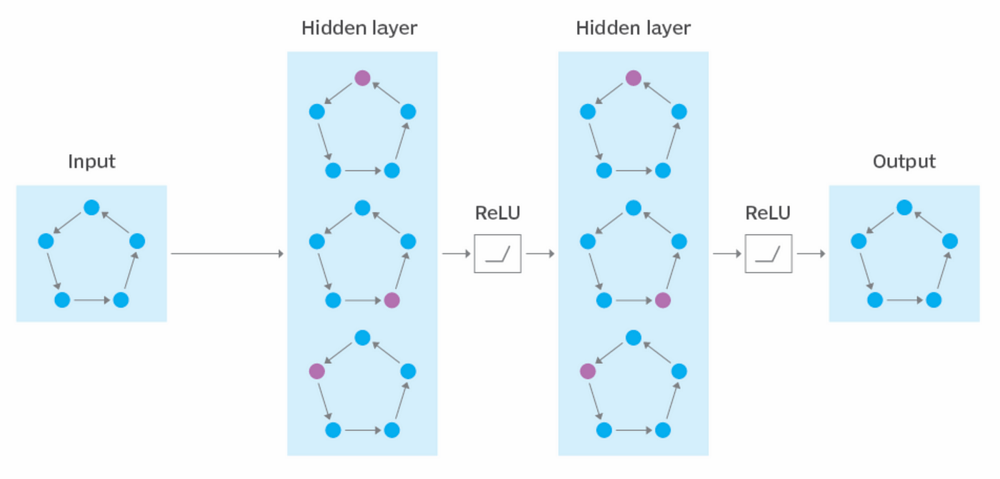
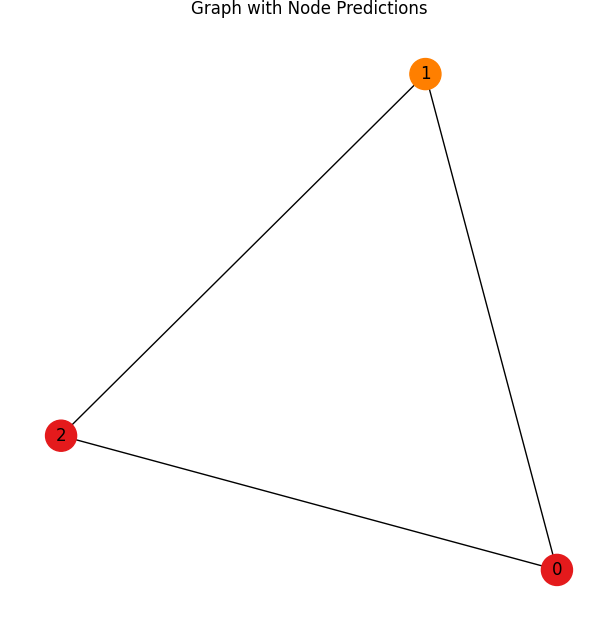

Graph Neural Networks (GNNs)
Introduction to Graph Neural Networks
Graph Neural Networks (GNNs) are a specialized type of deep learning model designed to operate on graph-structured data. Unlike traditional neural networks that work on grid-like data such as images or sequences, GNNs are capable of processing data represented as nodes and edges, capturing relationships and dependencies between entities. They are particularly valuable in domains where the interconnection between data points is essential, such as social network analysis, molecular chemistry, traffic networks, and recommendation systems. GNNs leverage graph topology and node attributes to learn complex representations, enabling tasks like classification, prediction, and clustering.
Basic Structure of GNNs
- Nodes: Represent entities in the data, such as users in a social network or atoms in a molecule.
- Edges: Denote relationships or interactions between nodes, like friendships or chemical bonds.
- Node Features: Each node is associated with a feature vector that encodes its properties or attributes.
- Edge Features: Some graphs include additional features for edges, capturing the type or strength of relationships.
- Graph-Level Features: In some applications, the entire graph has attributes representing its overall properties.
- Layers: GNNs consist of multiple layers where information is propagated and aggregated across nodes.
Working Mechanism of GNNs
1. Message Passing
- In this step, nodes exchange information with their immediate neighbors through a learnable function.
- Messages are aggregated from neighboring nodes using techniques like summation, mean, or max pooling.
- The aggregated information helps each node capture the local structure and context.
2. Feature Update
- The aggregated information is combined with the node's existing features using a learnable transformation, such as a neural network.
- This process creates updated embeddings for each node, reflecting its own features and the influence of its neighbors.
3. Layer Stacking
- Multiple GNN layers are stacked to allow nodes to capture information from multi-hop neighbors.
- As the number of layers increases, the receptive field of each node grows, enabling it to learn from distant nodes in the graph.
4. Global Pooling (if required)
- For tasks like graph classification, a global pooling step combines node embeddings into a single graph-level embedding.
- Techniques like mean pooling, max pooling, or attention-based pooling are used for this aggregation.
5. Optimization
- The embeddings are optimized using task-specific loss functions, such as cross-entropy for classification or mean squared error for regression.
- Optimization techniques like stochastic gradient descent (SGD) are employed to adjust the learnable parameters.
Applications of GNNs
- Social Networks: Predict user connections, recommend friends, or classify users based on their network behavior.
- Molecular Chemistry: Analyze molecular graphs for drug discovery, predicting properties like toxicity or solubility.
- Recommendation Systems: Leverage user-item interaction graphs to recommend products or content.
- Traffic Networks: Model and predict traffic patterns using road networks as graphs.
- Knowledge Graphs: Perform link prediction or entity classification for tasks like question answering.
Advantages of GNNs
- Adaptability: GNNs can process diverse graph structures, making them versatile across domains.
- Relational Learning: They effectively capture relationships and dependencies within graph data.
- End-to-End Learning: GNNs integrate feature extraction and prediction into a single model.
- Scalability: With appropriate optimizations, GNNs can handle graphs with millions of nodes and edges.
Limitations of GNNs
- Computational Complexity: Iterative message passing is resource-intensive for large graphs.
- Over-Smoothing: As layers increase, node embeddings may converge to similar values, reducing performance.
- Scalability Issues: GNNs struggle with extremely large graphs without specialized optimizations.
- Dependency on Graph Quality: Poorly constructed or incomplete graphs can degrade GNN performance.
- Hyperparameter Sensitivity: GNNs require careful tuning of parameters like layer depth and learning rate.
Sample Code Example
Graph Neural Networks in Action: Node Classification with PyTorch Geometric
import torch
import torch.nn as nn
import torch.optim as optim
from torch_geometric.nn import GCNConv
from torch_geometric.data import Data
import matplotlib.pyplot as plt
import networkx as nx
# Define a simple GCN model
class GCN(nn.Module):
def __init__(self, in_channels, out_channels):
super(GCN, self).__init__()
self.conv1 = GCNConv(in_channels, 16) # First GCN layer
self.conv2 = GCNConv(16, out_channels) # Second GCN layer
def forward(self, data):
x, edge_index = data.x, data.edge_index
x = self.conv1(x, edge_index)
x = torch.relu(x)
x = self.conv2(x, edge_index)
return x
# Create a simple graph (toy example)
# Node feature matrix (3 nodes with 2 features each)
x = torch.tensor([[1, 0], [0, 1], [1, 1]], dtype=torch.float)
# Edge list (connects nodes 0-1, 1-2, and 2-0)
edge_index = torch.tensor([[0, 1, 2], [1, 2, 0]], dtype=torch.long)
# Labels for nodes (for classification)
y = torch.tensor([0, 1, 0], dtype=torch.long)
# Create a PyG data object
data = Data(x=x, edge_index=edge_index, y=y)
# Initialize the GCN model
model = GCN(in_channels=2, out_channels=2)
# Loss and optimizer
criterion = nn.CrossEntropyLoss()
optimizer = optim.Adam(model.parameters(), lr=0.01)
# Training loop
num_epochs = 200
for epoch in range(num_epochs):
model.train()
# Zero gradients
optimizer.zero_grad()
# Forward pass
out = model(data)
# Compute loss (node classification)
loss = criterion(out, data.y)
# Backward pass
loss.backward()
optimizer.step()
if epoch % 20 == 0:
print(f'Epoch {epoch+1}, Loss: {loss.item()}')
# Test the trained model
model.eval()
out = model(data)
_, pred = out.max(dim=1)
print("\nPredicted labels:", pred)
# Visualize the graph with node predictions
G = nx.Graph()
# Add nodes
for i in range(data.x.shape[0]):
G.add_node(i, label=str(pred[i].item()))
# Add edges
for i in range(edge_index.shape[1]):
G.add_edge(edge_index[0, i].item(), edge_index[1, i].item())
# Visualize the graph using NetworkX
plt.figure(figsize=(6, 6))
pos = nx.spring_layout(G) # Layout for the nodes
nx.draw(G, pos, with_labels=True, node_size=500, node_color=[plt.cm.Set1(i / 2) for i in pred.tolist()])
plt.title("Graph with Node Predictions")
plt.show()
Output:
